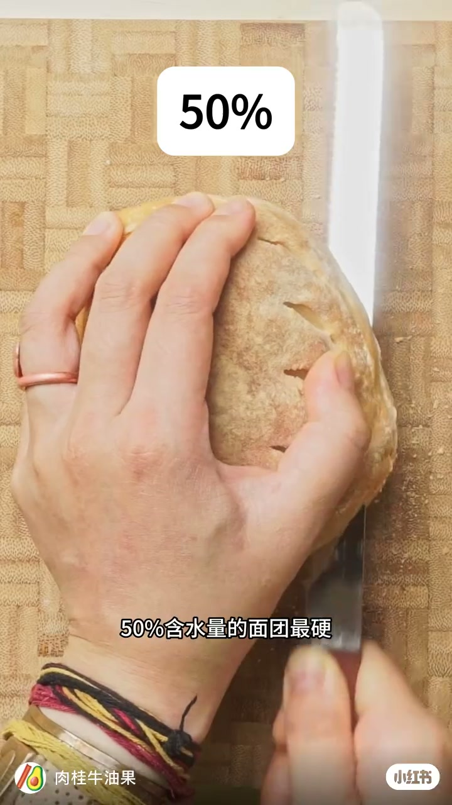
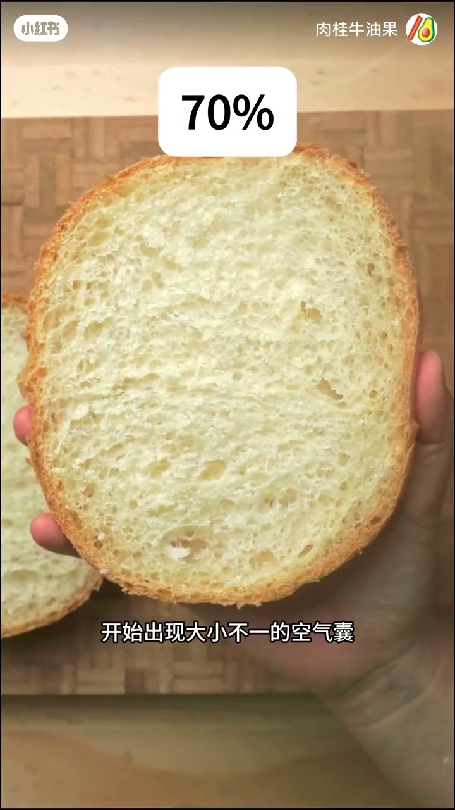
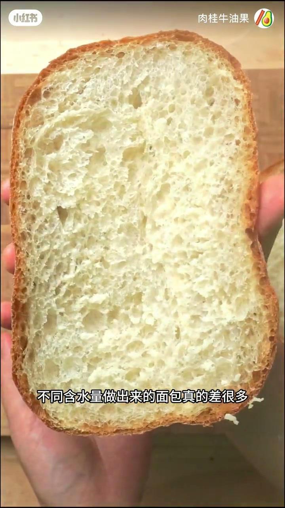

内容要点
知识结构
[00:00→00:10]
50%：最硬细密
角标50%，字幕「50%含水量的面团最硬」，切片气孔细小紧密。
[00:10→00:20]
70%：气囊出现
角标70%，字幕「开始出现大小不一的空气囊」。
[00:20→00:28]
对比收束
举起开放组织的切片，字幕总结不同含水量差别很大。
总结
只改水、粉不变，面包组织可以从细密硬实一路走到开放大气孔。
图文实录
50%：硬实细密
00:00 – 00:10
木砧板上下刀切小圆包，角标「50%」，字幕写面团最硬——低水局面筋延伸差，气孔细密。

[00:05]角标50%：含水量低，面团最硬、气孔细
Badge 50%: low hydration, firmest dough, fine crumb
70%：气囊分化
00:10 – 00:20
手持剖面，角标「70%」，字幕「开始出现大小不一的空气囊」——中等水分割面可见不规则孔洞。

[00:14]角标70%：大小不一的空气囊开始出现
Badge 70%: uneven air pockets begin to appear
更高水：开放组织
00:20 – 00:28
再举起更开放的切片，字幕「不同含水量做出来的面包真的差很多」，把实验结论钉死在视觉对比上。

[00:23]收束：含水量不同，组织差异一眼可见
Close: different hydration levels create obvious crumb differences